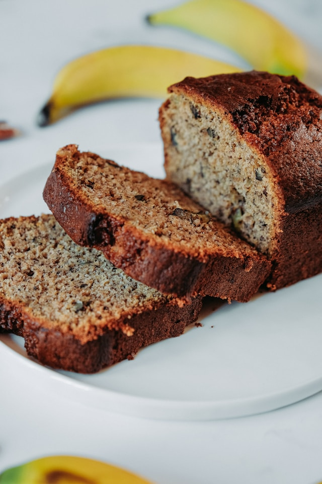

Home
Banana Bread

Description
This high-protein banana bread made with chocolate protein powder and oat flour is perfect for a quick breakfast or afternoon snack.
Ingredients
- 1 serving nonstick cooking spray
- 1 1⁄4cups oat flour
- 1⁄2 cup white sugar
- 1⁄2 cup chopped walnuts
- 2 scoops chocolate protein powder
- 3 teaspoons ground cinnamon
- 11⁄2teaspoons baking powder
- 1⁄2 teaspoon baking soda
- 3 overripe bananas, mashed
- 1⁄2 cup unsweetened applesauce
- 2 large egg whites
- 1⁄4 cup milk
- 3 teaspoons pure vanilla extract
Steps
- Preheat the oven to 350 degrees F (175 degrees C). Spray a 9x5-inch loaf pan with cooking spray.
- Mix together oat flour, sugar, walnuts, protein powder, cinnamon, baking powder, and baking soda in a medium bowl.
- Mix together mashed bananas, applesauce, milk, egg whites, and vanilla extract in a large bowl. Slowly add flour mixture to banana mixture; stirring until just combined. Transfer batter into the prepared loaf pan.
- Bake in the preheated oven until top of bread springs back when lightly pressed and a toothpick inserted into the center comes out clean, 35 to 40 minutes. Cool in the pan for 10 minutes. Transfer to a wire rack to cool completely.